แพลนเที่ยว 24–27 พ.ย. 2569 ♥
Singapore
- 4 วัน 3 คืน
- ที่พัก lyf Bugis
- ขาไป 07.45 · ขากลับ 21.00
ถึงสิงคโปร์ · Bugis · Marina Bay · Orchard
อ. 24/11/69- 04.00–05.00
ถึงสนามบิน (ไทย)
เครื่องขึ้น 07.45 น.
- 11.15
ถึงสิงคโปร์ – Changi
ถ่ายรูปเล่นสนามบิน + Jewel Christmas

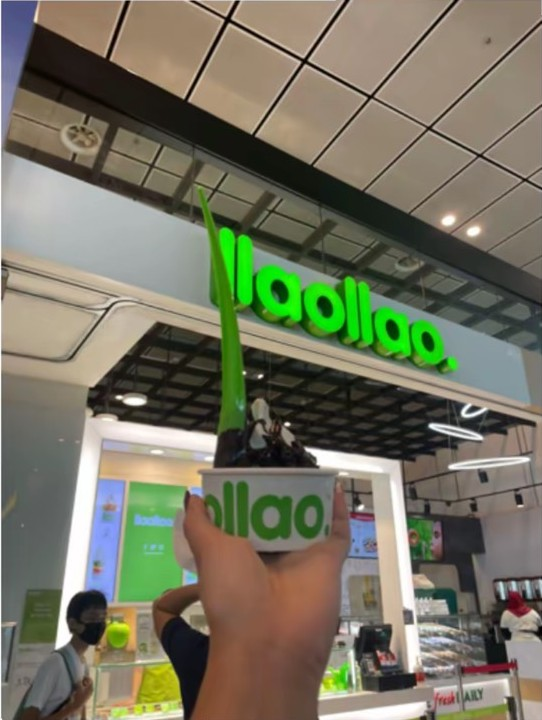
llaollao
Changi Terminal 3ไอติมโยเกิร์ต เลือกท็อปปิ้งได้ 2 อย่าง รีวิวบอกห้ามพลาด ลงเครื่องแล้วแวะกินก่อนเข้าเมือง
~5 SGDดูว่าเครื่องลงเทอร์มินัลไหน - ≈ 12.00
ออกจากสนามบิน ไปโรงแรม
- MRT ประมาณ 45 นาที (~5 SGD)
- แท็กซี่ ประมาณ 20 นาที (~20 SGD)
- ≈ 14.00
ถึงโรงแรม ฝากกระเป๋า
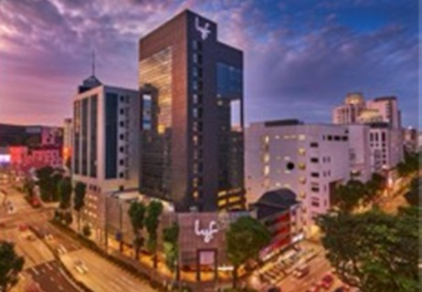
lyf Bugis Singapore
200 Middle Rd, Singapore 188980 · จองแล้ว 24–27 พ.ย.
- → 15.00
① ข้าวเที่ยง + ของหวาน
เดินจากโรงแรมประมาณ 12 นาที · ออกจากร้าน 15.00 น.
เดิน 15 นาทีCurry Fish Fillet Rice
ฟู้ดคอร์ท Bugis Junctionข้าวราดแกงกะหรี่ปลาทอด จานใหญ่ อิ่มมาก
2 จาน 14.32 SGDน้ำแก้วละ 1 SGD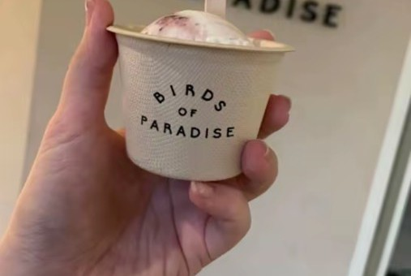
Birds of Paradise
Arab St / Beach Rdเจลาโต้กลิ่นดอกไม้ แนะนำสตรอว์เบอร์รี กับ White Chrysanthemum โคนหอมไทม์ ร้านสวยถ่ายรูปได้
ของหวานMichelin Guide - 15.30–16.00
② Old Hill Street Police Station
ตึกหน้าต่างสีรุ้ง ถ่ายรูป
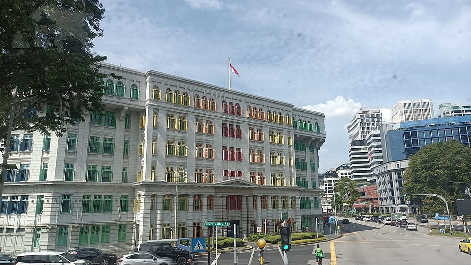
15 นาที - 16.20
③ กลับโรงแรม Check-in
- 17.00–18.30
④ Marina Bay Sands
รอบแสงไฟ
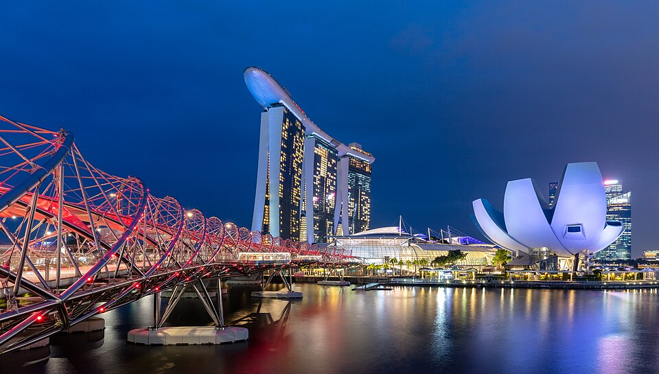
- 18.30–19.00
มื้อเย็น
มีเวลาราวครึ่งชั่วโมงก่อนไป Gardens เลยเน้นฟู้ดคอร์ทที่กินเร็ว
เลือก 1 ที่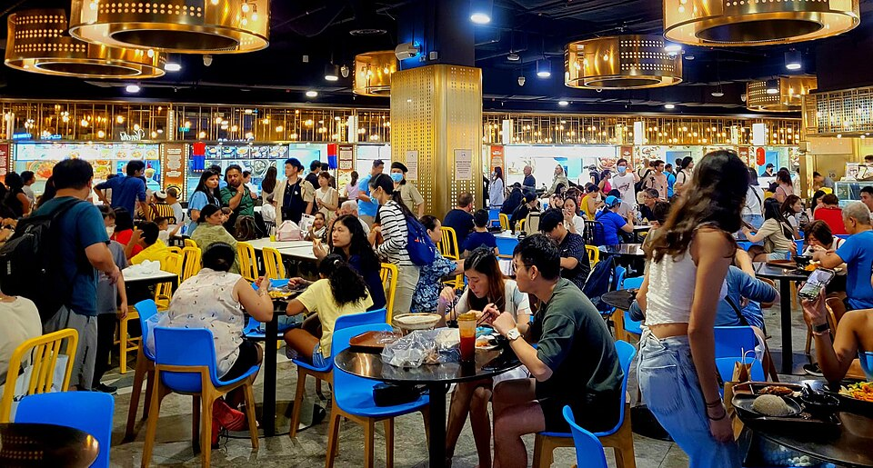
Rasapura Masters
ชั้นใต้ดิน The Shoppes at Marina Bay Sandsฟู้ดคอร์ทใหญ่ในห้าง MBS มีหลายร้านให้เลือก อยู่ตรงนั้นพอดีไม่ต้องเดินไกล
กินเร็วฟู้ดคอร์ท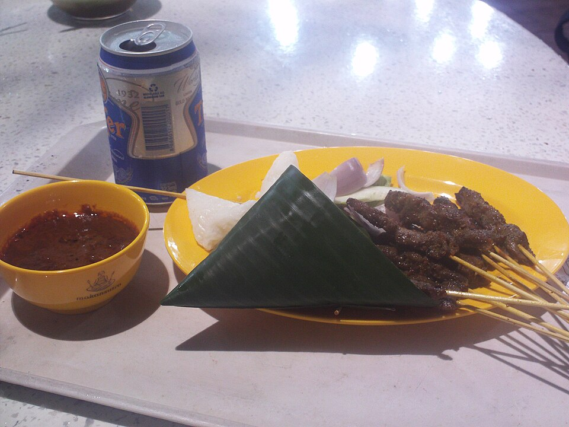
Satay by the Bay
ใน Gardens by the Bayศูนย์อาหารแบบฮอว์กเกอร์ มีสะเต๊ะ ไปกินหลังดูไฟจบก็ได้ แล้วค่อยไป Orchard ช้าลงหน่อย
สะเต๊ะฮอว์กเกอร์ - 19.00–20.30
⑤ Gardens by the Bay – Christmas
รอบแสงไฟ
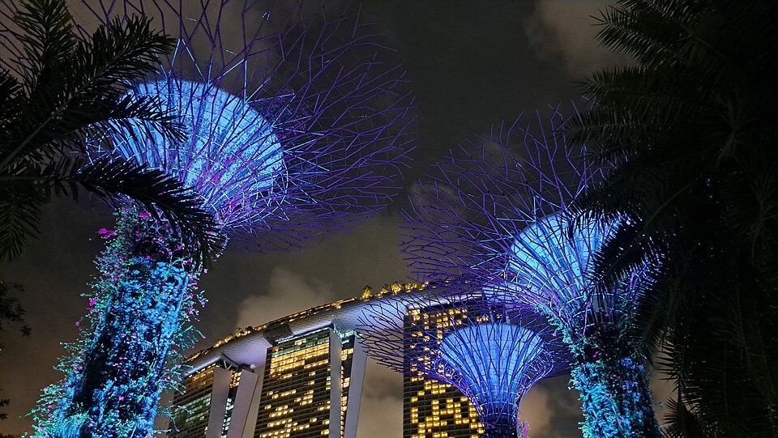
- ≈ 21.00
⑥ Orchard Road
เดินดูไฟคริสต์มาส
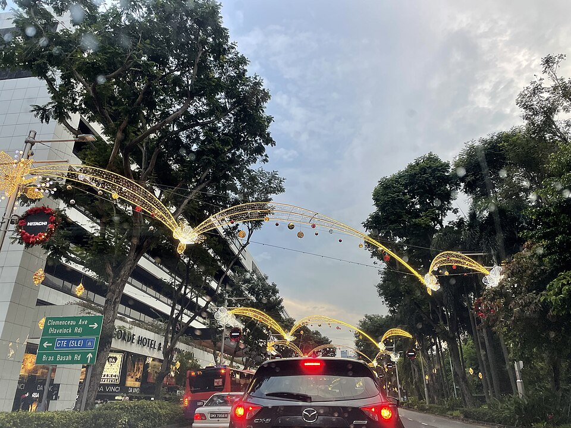
- ปิดวัน
⑦ กลับโรงแรม
Universal Studios · Sentosa
พ. 25/11/69Universal เปิด 10.00 น. · เดินทางจากที่พักประมาณ 30 นาที
- เช้า
① อาหารเช้า
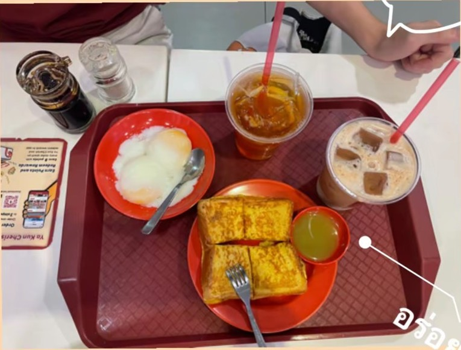
Ya Kun Kaya Toast
Bugis Junctionขนมปังปิ้งคายา ไข่ลวก ชานมอร่อยมาก รีวิวให้ 5/5
~11.2 SGD / 2 คน - 10.00
② Universal Studios Singapore

- ต่อ
③ Sentosa
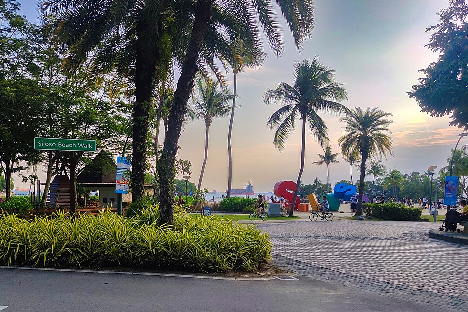
- เย็น
④ มื้อเย็นที่ VivoCity
อยู่ทางออกจาก Sentosa พอดี แวะกินก่อนกลับ
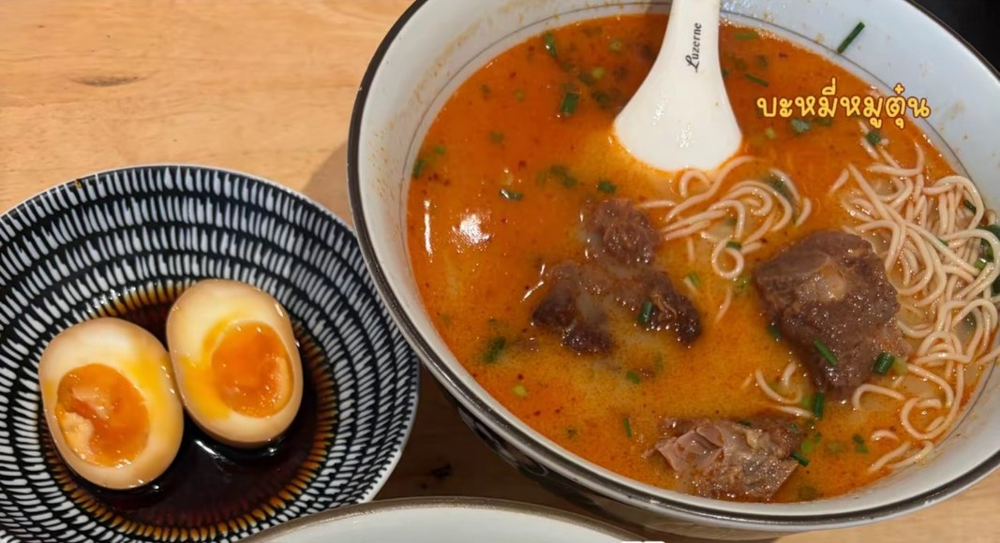
LeNu Chef Wai's Noodle Bar
VivoCityบะหมี่ลาเมียนเส้นสด ซุปกระดูกเข้มข้น บะหมี่หมูตุ๋น เกี๊ยวหมู ไก่ทอดก็อร่อย
บะหมี่ - ปิดวัน
⑤ กลับที่พัก
Harry Potter · Marina Bay · Chinatown · Bugis
พฤ. 26/11/69- เช้า
① อาหารเช้า
Victor's Kitchen
Bras Basah · ใกล้โรงแรมติ่มซำร้านดัง ฮะเก๋า เต้าหู้ทอด ซาลาเปาไข่เค็มลาวา
ติ่มซำ - 11.00–13.00
② Harry Potter (เปิด 10.00 น.)
ไปถึง 10.30 น. · เข้ารอบ 11.00 น.
- 14.00–15.00
③ Marina Bay + Merlion + ปั่นจักรยาน
ปั่นเลียบอ่าว Marina Bay ผ่าน Merlion, Esplanade, Helix Bridge แล้วแวะถ่ายรูป
- เช่าจักรยานผ่านแอป เช่น Anywheel หรือ HelloRide สแกนแล้วปั่นได้เลย จอดคืนตรงจุดจอดของแอป
- รอบอ่าวประมาณ 3.5 กม. ปั่นสบาย ๆ ราว 30–40 นาที
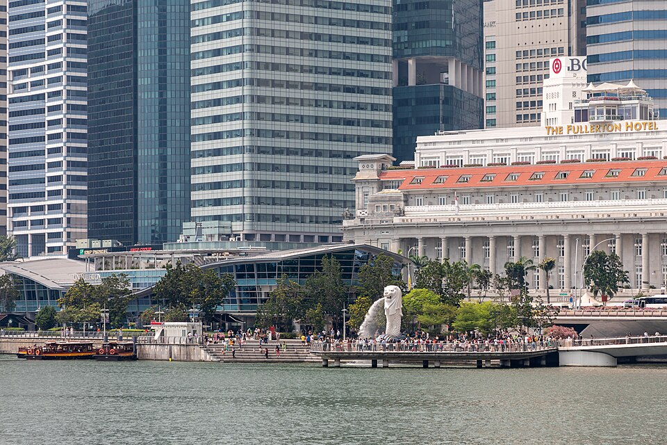
- 15.30–16.30
④ Gardens by the Bay (ตอนกลางวัน)
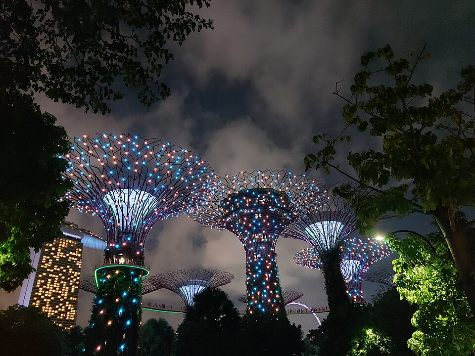
- เย็น
⑤ มื้อเย็นที่ Chinatown
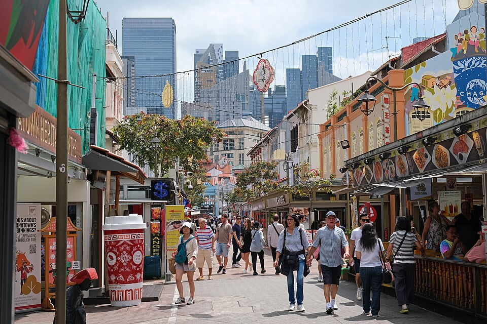
เลือก 1 ร้าน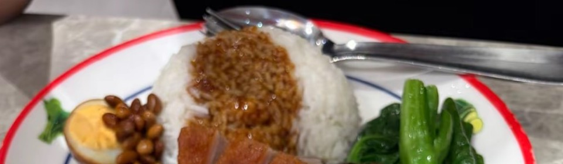
Hawker Chan
Chinatownข้าว/บะหมี่ไก่ซีอิ๊ว หมูแดง เส้นบะหมี่เหนียวนุ่ม
พกทิชชู่เปียก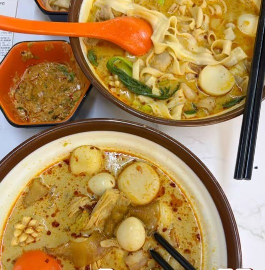
Zhangliang Mala
Chinatownหม่าล่าตักเองชั่งน้ำหนัก น้ำจิ้มตักฟรี
หม่าล่าMustache BBQ
Chinatownปิ้งย่างเสียบไม้สไตล์จีน ปลาต้มผักดอง ถั่วฝักยาวผัดพริกแห้ง
ปิ้งย่าง - ค่ำ
⑥ Bugis Street + ของหวาน
เดินเล่น ซื้อของฝาก แล้วปิดท้ายด้วยของหวาน
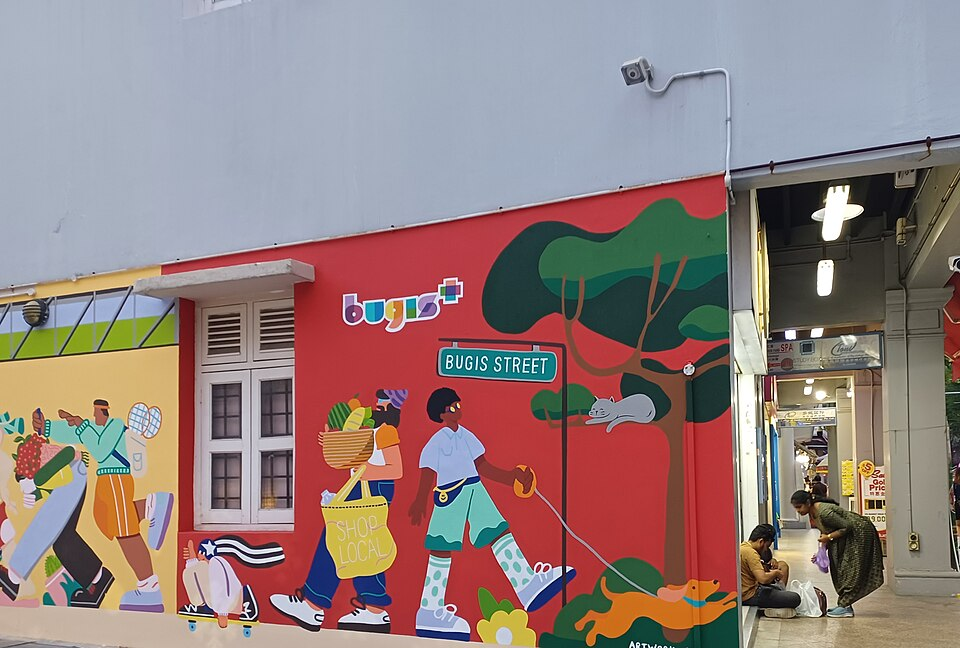
เลือก 1 ร้านAiFO KATO
แถว BugisPistachio Gelato ราด Espresso ขม ๆ ตัดหวานลงตัว
ที่นั่งน้อย ยืนกิน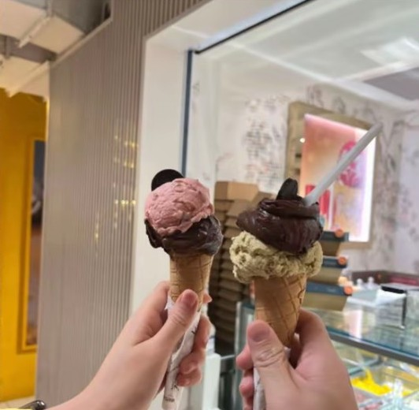
Venchi
แถว Bugisเจลาโต้และช็อกโกแลตอิตาลี เคลือบช็อกโกแลตในโคน
เจลาโต้
City Hall · Suntec · กลับบ้าน
ศ. 27/11/69เครื่องขึ้น 21.00 น. ควรถึง Changi ราว 18.00 น. เช็กเอาต์แล้วฝากกระเป๋าไว้ที่โรงแรมก่อนออกเที่ยว
- เช้า
อาหารเช้า
Ya Kun อีกรอบ รีวิวบอกกินทุกเช้าก็ไม่เบื่อ
Ya Kun Kaya Toast
Bugis Junction · ใกล้โรงแรมขนมปังปิ้งคายา ไข่ลวก ชานม
~11.2 SGD / 2 คน - ต่อ
① National Gallery Singapore
MRT City Hall · Exit B
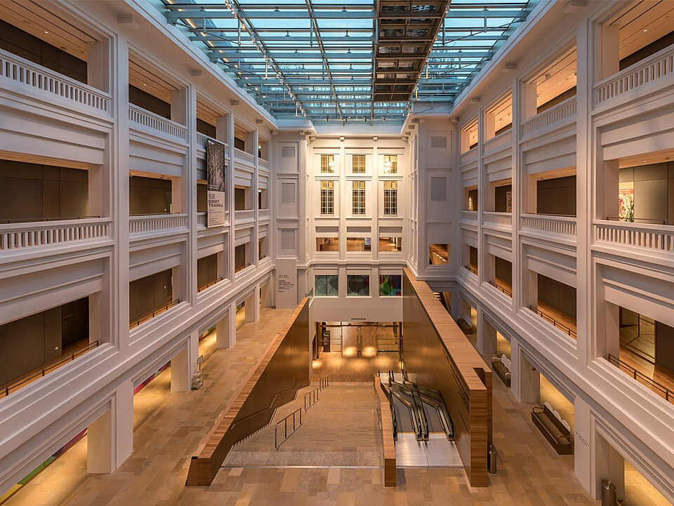
- ต่อ
② Fountain of Wealth
MRT Promenade · Exit C
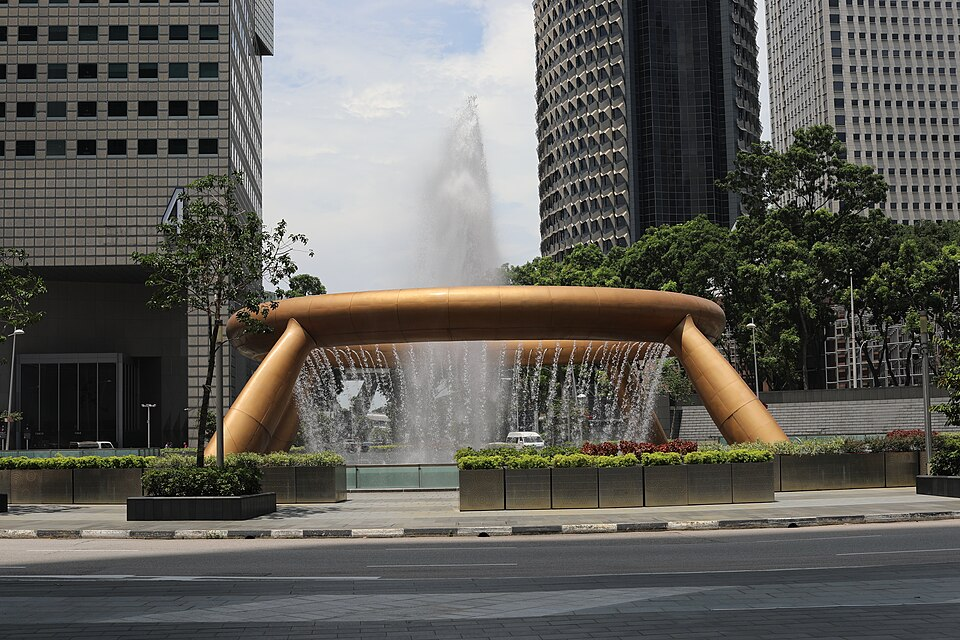
- เที่ยง–บ่าย
③ ข้าวเที่ยงที่ Suntec City
อยู่ห้างเดียวกับ Fountain of Wealth ดูน้ำพุเสร็จเดินไปกินได้เลย
ของหวานต่อ (ถ้ามีเวลา)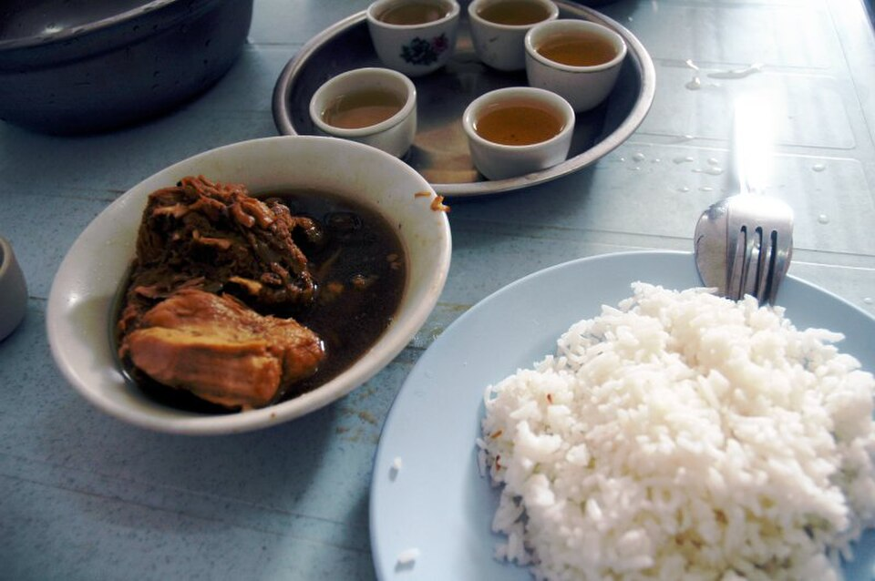
En Yeoh's Bak Kut Teh ♥
สาขา Suntec Cityบักกุ๊ดเต๋สไตล์ Klang มาเลเซีย ซุปสมุนไพรในหม้อดิน ร้านที่แฟนอยากไป
บักกุ๊ดเต๋เช็กสาขาใน Google Maps ก่อนไปรูปตัวอย่าง ไม่ใช่รูปของร้านDopa Dopa
29 South Bridge Rd · ใกล้ Clarke Quayเจลาโต้เนื้อแน่น ละมุน กินกับวาฟเฟิลอบใหม่ เปิดประมาณเที่ยงถึง 4 ทุ่ม
Michelin Recommendedแท็กซี่จาก Suntec ~10 นาที - ≈ 16.45
④ กลับโรงแรม รับกระเป๋า
- ≈ 17.00
⑤ ออกเดินทางไปสนามบิน
MRT ~45 นาที / แท็กซี่ ~20 นาที - ≈ 18.00
⑥ ถึง Changi เช็กอิน
กินข้าวในสนามบินก่อนขึ้นเครื่อง
- 21.00
⑦ เครื่องออก กลับไทย ✈